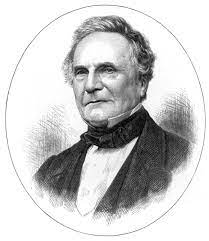

<!DOCTYPE html>
<html lang="en">
<head>
   <meta charset="UTF-8">
   <meta name="viewport" content="width=device-width, initial-scale=1.0">
   <title>Document</title>
  
</head>
<body>
   
</body>
</html>

<body>
   <h1>CHARLES BABBAGE</h1>
   <ul>
     <li>
         <h5><a href="#About">About</a></h5>
     </li>
      <li>
         <h5><a href="#Earlylife">Early life</a></h5>
      </li>
      <li>
         <h5><a href="#Inventions">Inventions</a></h5>
      </li> <br>
   </ul>
   
   
   
   <br>

<div id="About">
   <h3>
      <u><b>About</b></u>
   </h3>
   <p><b>Charles Babbage</b> was an <u>English polymath</u>. A mathematician, philosopher, inventor and mechanical engineer, Babbage originated the concept of a digital programmable computer.
   Babbage is considered by some to be <i>"father of the computer"</i>. <br>Babbage is credited with inventing the first mechanical computer, the Difference Engine, that eventually led to more complex electronic designs, though all the essential ideas of modern computers are to be found in Babbage's Analytical Engine, programmed using a principle openly borrowed from the Jacquard loom.
   <br>Babbage had a broad range of interests in addition to his work on computers covered in his 1832 book Economy of Manufactures and Machinery. His varied work in other fields has led him to be described as "pre-eminent" among the many polymaths of his century.
   <br>
   <br>
   </p>
   <button>
      <a href="" target="_blank">Read more</a>
   </button>
</div>


<div id="Earlylife">
  <h3>
   <u><b>Early life</b></u>
  </h3>
   <p>Babbage's birthplace is disputed, but according to the Oxford Dictionary of National Biography he was most likely born at <b>44 Crosby Row, Walworth Road, London, England.</b>
      Babbage was one of four children of Benjamin Babbage and Betsy Plumleigh Teape.
      His father was a banking partner of William Praed in founding Praed's & Co. of Fleet Street, London, in 1801. In 1808, the Babbage family moved into the old Rowdens house in East Teignmouth.
      <a href="" target="_blank">Know more</a>
   </p> 
</div>
<h3><u><b>Publications</b></u>
</h3>
   <p>As of now no relevant information on Charles Babbage's publications are known.
      Any obtained information will be updated soon...
      
   </p>

<div id="Inventions">
   <h3><u><b>Inventions</b></u>
   </h3>   
   <h3><u><b><li>Analytical Engine</li></b></u>
   </h3>
    <p>Analytical Engine, generally considered the first computer, designed and partly built by the English inventor Charles Babbage in the 19th century (he worked on it until his death in 1871).
       While working on the Difference Engine, a simpler calculating machine commissioned by the British government, Babbage began to imagine ways to improve it.
      Chiefly he thought about generalizing its operation so that it could perform other kinds of calculations. By the time funding ran out for his Difference Engine in 1833, he had conceived of something far more revolutionary: a general-purpose computing machine called the <b>Analytical Engine</b>.
    </p>
    <button>
      <a href="" target="_blank">Know more</a>
   </button>
   <h3><u><b>Video</b></u>
   </h3>
   <video width="320" height="240" controls>
      <source src="Charles Babbage Biography.mp4" type="video/mp4">
   </video>
</div>


<hr>
      
      <h3>Contact</h3>
      <label>Name</label>
      <input type="text" style="background-color: white;"> <br>
      <label>Email</label>
      <input type="email" style="background-color: white;"> <br>
      <label>Message</label>
      <textarea rows="10.5"></textarea>
      <button>Submit</button>
</body>
</html>